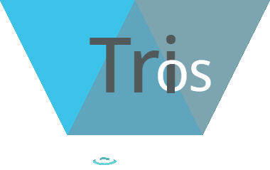

OpenMX 10
By Makssuper747
OpenMX is an operating system designed to be moldable to fit the needs of other operating systems like MaxOS, Katelyn.MX, and many more.OpenMX 11
By Makssuper747
OpenMX 11 is an enhanced version of its predecessor, OpenMX 10, with more features for users and developers.
Bambus OS 5
By The Bambus OS Team
Bambus OS is a powerful TurboWarp-based OS based on the Micro Consen kernel with robust features other OSes don't have.
Bambus OS 6
By The Bambus OS Team
Bambus OS 6 is an even more powerful version of Bambus OS with even richer features than before.

TriOS - Build 2030
By Scratch_Fakemon
TriOS is an open-source operating system based around editions. Cosmos is the edition geared toward home users.
PaweR OS Andromeda
By PaweR_Develop
PaweR OS Andromeda is a rewrite of the existing PaweR OS line now based on Micro Consen—the same kernel that powers Bambus OS 5 and up.gammaOS Apollo
By The Delta Team
gammaOS is a more niche operating system that features support for the Windows Delta and XCore.AleOS Tokyo
By AlejandrixKing245
AleOS Tokyo is a lightweight operating system with the bare essentials.AleOS Aether
By AlejandrixKing245
AleOS Aether is a revised version of AleOS with more features while still being lightweight.
JetOS
By Novaboom6956
JetOS is a modern operating system designed to feel like it's from the 90s